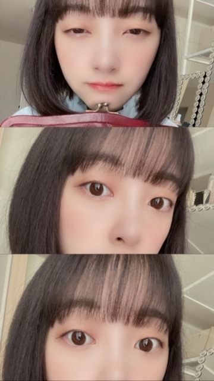

2020/0919Satらし
やほ〜
お風呂でブログ書いています〜
最近、携帯が防水？なことを知り
携帯を持ち込んで半身浴をしています
汗たくさんかくぞ〜
あと、髪切りました
最近よく髪切ってます
ショートボブはシルエットが大事なの！

前募集して、みなさんが見たいって
言ってくださったコスプレ仮装
計画中ですので
10月にはお見せできたらなと^ - ^
ショートヘアのアニメ系が
やはり多かったー！

いろんなかお


ar
日経エンタテインメント
の感想見てます
ありがとうございます
今月28日発売の
withにも載っています
みてね^ - ^
では
2020/09/19 21:06
コメント(307)
ar読みました!
未央奈ちゃんの髪型で
男性ファンはショート派が多くて
女性ファンはロング派が多いって
答えてましたが、
自分は女ですがショート派です!
でもロングも好きです
どちらも可愛いのです(^O^)
未央奈ちゃんの髪型で
男性ファンはショート派が多くて
女性ファンはロング派が多いって
答えてましたが、
自分は女ですがショート派です!
でもロングも好きです
どちらも可愛いのです(^O^)
未央奈ちゃん、こんばんは♪
アニメのコスプレは、
僕は バスケットのアニメの 黒子君
というキャラクタ―などが好きです。
未央奈ちゃんには 日常 というアニメの
長野原みおさん というキャラクタ―の
コスプレをしてほしいです。
僕は友達が少ない の 羽瀬川小鳩さん
などもしてほしいです。
俺の妹がこんなに可愛いわけがない の
新垣あやせさん などもしてほしいです。
僕がアニメで一番好きなキャラは ペルソナ4 の
クマさん です。
未央奈ちゃん、お休みね☆
アニメのコスプレは、
僕は バスケットのアニメの 黒子君
というキャラクタ―などが好きです。
未央奈ちゃんには 日常 というアニメの
長野原みおさん というキャラクタ―の
コスプレをしてほしいです。
僕は友達が少ない の 羽瀬川小鳩さん
などもしてほしいです。
俺の妹がこんなに可愛いわけがない の
新垣あやせさん などもしてほしいです。
僕がアニメで一番好きなキャラは ペルソナ4 の
クマさん です。
未央奈ちゃん、お休みね☆
ブログ更新ありがとう☆
未央奈ちゃんのボブ本当好きです！可愛すぎ^ ^
ar見たよー！ オーバーオールめっちゃ可愛い！似合いすぎ
昔芸人さんを目指してたんですね^_^ そういや脇の体操やってましたもんね♪ もうすぐ24歳ですね！これからも未央奈ちゃん推しですので活躍期待してますね♪
未央奈ちゃんのボブ本当好きです！可愛すぎ^ ^
ar見たよー！ オーバーオールめっちゃ可愛い！似合いすぎ
昔芸人さんを目指してたんですね^_^ そういや脇の体操やってましたもんね♪ もうすぐ24歳ですね！これからも未央奈ちゃん推しですので活躍期待してますね♪
未央奈ちゃんおはようございます‼ありがとうございます‼楽しみにしてます頑張ります‼頑張って下さい！ありがとうございます‼
未央奈ちゃんブログ更新ありがとう!!!
めっちゃ可愛い⸜❤︎⸝
10月楽しみにしています！
今日も大好きです!!!
めっちゃ可愛い⸜❤︎⸝
10月楽しみにしています！
今日も大好きです!!!
最近私の友達が未央奈のこと気になっているみたいです。
乃木ファンが増えたら嬉しいな
乃木ファンが増えたら嬉しいな
みおなちゃん、こんにちは。
乃木坂工事中、僕は見たよ。録画して見ました。
乃木坂メンバーが言ってそうＧＰ後半戦でしたね。
みおなちゃん、言ってそうクイーン受賞、おめでとうございます。セリフ読みと演技とてもじょうずでしたよ。さすがですね。
みおなちゃん、体調に気をつけて仕事頑張ってね。
またコメントするね。
乃木坂工事中、僕は見たよ。録画して見ました。
乃木坂メンバーが言ってそうＧＰ後半戦でしたね。
みおなちゃん、言ってそうクイーン受賞、おめでとうございます。セリフ読みと演技とてもじょうずでしたよ。さすがですね。
みおなちゃん、体調に気をつけて仕事頑張ってね。
またコメントするね。
ブログいつもお疲れ様！
ショートが1番似合うし、写真たくさんで嬉しいです！
また楽しみにしてるね！
ショートが1番似合うし、写真たくさんで嬉しいです！
また楽しみにしてるね！
モバメありがとう。ナイスですね！
夕飯の買物行かなくちゃ。
そっちいそがしいのに、ありがとう。
夕飯の買物行かなくちゃ。
そっちいそがしいのに、ありがとう。
ほんとにやさしい性格なんですね。
ども～モバメありがとね！
そだね！秋晴れって感じで涼しいし過ごしやすいし良いよね！
散歩や秋らしい物食べてるんだ！未央奈らしいね♪
俺もさつまいも好きだからお菓子とか見つけたらつい買っちゃってるよw
またもぐもぐ未央奈見たいなぁ。秋シリーズのやつで☆
今の時期がもう少し続いていて欲しいよね、ほんと一年中でも良いくらいだよね(；・∀・)w
でも冬もすぐ来るんだろうねぇ、楽しみもあるけど寒いのがなーw(￣▽￣;)
乃木坂工事中観たよー！言ってそうクイーンおめでとう！？かなw
いや、ほんとにめっちゃ上手くて良かったし面白かったよ！
未央奈の「ツッコミちょっと早いんだよね」はテレビの前でもう拍手してたよ(*￣∇￣)ノ
日経エンタテイメントの記事も見ました、後輩の良き相談相手にって見出し良いなって思ったよ！
記事でもあったけど、今までの活動を経てのグループの立ち位置やバレッタでの経験がある未央奈だからこそ後輩メンバーたちに寄り添ってあげられるってことなんだよね。
すごいグループ全体としても、後輩からも大事で大切な存在だと思うなぁ。
何て言うか、前でも後ろでも無く中心ってイメージが未央奈にはあるかな。
もちろん期別やユニット曲じゃないセンター未央奈もまたみたいけどね( ・∇・)
あとは2期生ライブだよね！
あの、配信ライブもほんと良かったけどやっぱりいつかちゃんと開催出来ると良いよね！
今はまだまだ厳しいだろうけど、その分これからの希望や夢は広がるよね頑張ろー♪
そだね！秋晴れって感じで涼しいし過ごしやすいし良いよね！
散歩や秋らしい物食べてるんだ！未央奈らしいね♪
俺もさつまいも好きだからお菓子とか見つけたらつい買っちゃってるよw
またもぐもぐ未央奈見たいなぁ。秋シリーズのやつで☆
今の時期がもう少し続いていて欲しいよね、ほんと一年中でも良いくらいだよね(；・∀・)w
でも冬もすぐ来るんだろうねぇ、楽しみもあるけど寒いのがなーw(￣▽￣;)
乃木坂工事中観たよー！言ってそうクイーンおめでとう！？かなw
いや、ほんとにめっちゃ上手くて良かったし面白かったよ！
未央奈の「ツッコミちょっと早いんだよね」はテレビの前でもう拍手してたよ(*￣∇￣)ノ
日経エンタテイメントの記事も見ました、後輩の良き相談相手にって見出し良いなって思ったよ！
記事でもあったけど、今までの活動を経てのグループの立ち位置やバレッタでの経験がある未央奈だからこそ後輩メンバーたちに寄り添ってあげられるってことなんだよね。
すごいグループ全体としても、後輩からも大事で大切な存在だと思うなぁ。
何て言うか、前でも後ろでも無く中心ってイメージが未央奈にはあるかな。
もちろん期別やユニット曲じゃないセンター未央奈もまたみたいけどね( ・∇・)
あとは2期生ライブだよね！
あの、配信ライブもほんと良かったけどやっぱりいつかちゃんと開催出来ると良いよね！
今はまだまだ厳しいだろうけど、その分これからの希望や夢は広がるよね頑張ろー♪
みおなちゃん更新ありがとう╰(*´︶`*)╯♡
お風呂でブログ書いてたんだねー
携帯の防水は真水のみだったりするから一応気を付けてね(ﾟoﾟ;;
写真もありがとう！
ショートボブ良き良き
コスプレ仮装楽しみです（╹◡╹）♡
お風呂でブログ書いてたんだねー
携帯の防水は真水のみだったりするから一応気を付けてね(ﾟoﾟ;;
写真もありがとう！
ショートボブ良き良き
コスプレ仮装楽しみです（╹◡╹）♡
こんばんは
今日は秋晴れでしたね～
最近、すっかり涼しくなってきて秋を感じる
陽気だね。
連休中は仕事です！だけど明日は休み
今日は秋晴れでしたね～
最近、すっかり涼しくなってきて秋を感じる
陽気だね。
連休中は仕事です！だけど明日は休み
自分の場合は、２連休ですので、今日は、休養日、
明日は、映画見に行こうか、と思っています。
ちなみに、映画は、宇宙で一番明るい屋根 です。
新進気鋭、期待の若手監督作品という事を、新聞で読み
まして、興味持ちました。
映画観た後は、英国風パブで、ビール飲みながら、
本を読みたいと思っています。 一年中で、一番気候的
にいい季節ですよね。 出掛けないと勿体無いと思いま
すよね。
後それから、レディ・プレイヤー１ は、見物だと思い
ます。
乃木中のギアみおな・・・最高でした！
日村さんに悪口の演技を超えた演技だったよー！
ギアはどこまで出せますか？
日村さんに悪口の演技を超えた演技だったよー！
ギアはどこまで出せますか？
こんばんは、未央奈ちゃん
乃木中見たよ。
言ってそうGPめっちゃおもしろかった。
未央奈ちゃんはやっぱり演技力凄いよ。
深夜に爆笑してしまった。
やるときはいつもトップギアの未央奈ちゃん、
さすがです。
乃木中見たよ。
言ってそうGPめっちゃおもしろかった。
未央奈ちゃんはやっぱり演技力凄いよ。
深夜に爆笑してしまった。
やるときはいつもトップギアの未央奈ちゃん、
さすがです。
あら 可愛い〜
未央奈 応援しとるよー^ ^
未央奈 応援しとるよー^ ^
未央奈さん、いつも早めのブログ更新ありがとうございます。
未央奈さん出身の東海圈はまだ30度越えてますが、関東から北は秋の気配になり過ごし安くなりましたね。
私は冬が季節としては好きですね。
ブログの写真で、半目にしている顔が意外に良いと思いますよ。
(^.^)
CRYSTALより。
未央奈さん出身の東海圈はまだ30度越えてますが、関東から北は秋の気配になり過ごし安くなりましたね。
私は冬が季節としては好きですね。
ブログの写真で、半目にしている顔が意外に良いと思いますよ。
(^.^)
CRYSTALより。
乃木坂工事中見ました。
未央奈ちゃんとみり愛ちゃん出ててうれかったです。
大好きです❤
未央奈ちゃんとみり愛ちゃん出ててうれかったです。
大好きです❤
・へい未央奈(•ө•)
・俺は仕事して、帰りに唐揚げ弁当を買って家で食べて、夕寝して、起きて筋トレして、今から晩飯(^^)
夏らしいことはしなかったから、秋らしいことはしたいよな(*´﹃｀*)(思いつかんが←)小学生時代はどんぐり集めとかした記憶があるが、なんで集めてたかは覚えてない。笑
・5％の奇跡を早く見終わって感想書きにきたいんだがなー中々進まない。笑
・最近はファミマのフラッペにハマってる٩(♡ε♡ )۶おやすみおなー
・俺は仕事して、帰りに唐揚げ弁当を買って家で食べて、夕寝して、起きて筋トレして、今から晩飯(^^)
夏らしいことはしなかったから、秋らしいことはしたいよな(*´﹃｀*)(思いつかんが←)小学生時代はどんぐり集めとかした記憶があるが、なんで集めてたかは覚えてない。笑
・5％の奇跡を早く見終わって感想書きにきたいんだがなー中々進まない。笑
・最近はファミマのフラッペにハマってる٩(♡ε♡ )۶おやすみおなー
未央奈～
私も秋好きだよ～！
この夏から秋に変わる空気感が好き！
未央奈も元気みたいで安心した～☺️
またコメントします♪
私も秋好きだよ～！
この夏から秋に変わる空気感が好き！
未央奈も元気みたいで安心した～☺️
またコメントします♪
みおなちゃんこんばんは！
ブログ更新ありがとう(^^)
お風呂で書いてますなんて言ったらいやらしい目で見る人いるから気をつけてね！笑
ハロウィンの仮装、楽しみ〜❣️
みおなちゃんいつもカッコよく着こなしてるから思いっきりギャグに走ったのを見てみたい！！、、、カボチャとか
服といえば！！
後輩ちゃんたちにお洋服あげたんだね(^^)
これ聞いてすごく嬉しい気持ちになった( ´ ▽ ` )
みんなも喜んでブログにもアップしてたね❣️
仲良いのは良きこと〜♩
乃木坂工事中
乃木坂が裏で言ったそうな選手権
優勝おめでとうございます
レベルの高い戦いだったね)^o^(
みおなちゃんのギアのやつも、ツッコミ早いよーのもどちらも最高だった✌️
個人的にみり愛ちゃんの虫が大体日村に止まるも最高でした笑
二人とも演技のお仕事更にバンバン来ること間違いないね（＾Ｏ＾☆♪
楽しませてくれてありがとうねー❣️
またねー！
ブログ更新ありがとう(^^)
お風呂で書いてますなんて言ったらいやらしい目で見る人いるから気をつけてね！笑
ハロウィンの仮装、楽しみ〜❣️
みおなちゃんいつもカッコよく着こなしてるから思いっきりギャグに走ったのを見てみたい！！、、、カボチャとか
服といえば！！
後輩ちゃんたちにお洋服あげたんだね(^^)
これ聞いてすごく嬉しい気持ちになった( ´ ▽ ` )
みんなも喜んでブログにもアップしてたね❣️
仲良いのは良きこと〜♩
乃木坂工事中
乃木坂が裏で言ったそうな選手権
優勝おめでとうございます
レベルの高い戦いだったね)^o^(
みおなちゃんのギアのやつも、ツッコミ早いよーのもどちらも最高だった✌️
個人的にみり愛ちゃんの虫が大体日村に止まるも最高でした笑
二人とも演技のお仕事更にバンバン来ること間違いないね（＾Ｏ＾☆♪
楽しませてくれてありがとうねー❣️
またねー！
・へい未央奈(•ө•)
・『5パーセントの奇跡 嘘から始まる素敵な人生』を観たよ(^^)
目の病気で5％しか見えない中で、夢の一流ホテルで働く事を叶えるために、目の病気のことを隠しながら、一流ホテルで研修し、同僚や仕事仲間に助けられたり、運命の女性と支えあいながら、夢を叶えるために頑張っていくお話しかな。
これが実話ってのが驚いたよ(・.・;)主演の男性もイケメソだから、未央奈も時間があったら観てね(^^)
・がんばみおなー
・『5パーセントの奇跡 嘘から始まる素敵な人生』を観たよ(^^)
目の病気で5％しか見えない中で、夢の一流ホテルで働く事を叶えるために、目の病気のことを隠しながら、一流ホテルで研修し、同僚や仕事仲間に助けられたり、運命の女性と支えあいながら、夢を叶えるために頑張っていくお話しかな。
これが実話ってのが驚いたよ(・.・;)主演の男性もイケメソだから、未央奈も時間があったら観てね(^^)
・がんばみおなー
さっきまで昼寝してたー
今日で連休終わりだね！
今日で連休終わりだね！
未央奈～☺️
今日は午後からMVコレクション観てた！
やっぱりゆっくりと咲く花、いい曲だね。
染みました…！！
未央奈ときいちゃんの歌いだしから、サビで合ってるかな？そこに向かってくときの階段を登るような音が良いよね。
歌詞はもちろん素晴らしいんだけど、音だけのところも素敵だよ！
ラストの方も素敵なの！
あとはね、路面電車の街が結構好きで、MVと合わせて聴くと更にいいよね～。
泣けてくるよね！
もちろん乃木坂ちゃんの曲は全て好きですが、今日聴いた中のおすすめポイントでした♪
今日は午後からMVコレクション観てた！
やっぱりゆっくりと咲く花、いい曲だね。
染みました…！！
未央奈ときいちゃんの歌いだしから、サビで合ってるかな？そこに向かってくときの階段を登るような音が良いよね。
歌詞はもちろん素晴らしいんだけど、音だけのところも素敵だよ！
ラストの方も素敵なの！
あとはね、路面電車の街が結構好きで、MVと合わせて聴くと更にいいよね～。
泣けてくるよね！
もちろん乃木坂ちゃんの曲は全て好きですが、今日聴いた中のおすすめポイントでした♪
未央奈ちゃんごめんコメント遅れた！
未央奈ちゃんがどんなコスプレするのかめっちゃ楽しみだよ！やっぱ未央奈ちゃんのボブ可愛い！
ごめんね、コメント少なくて…次ブログ更新した時はしっかりちゃんとしたコメント書くね！
じゃあまたブログ更新した時に！
ヾ(･ω･`)
未央奈ちゃんがどんなコスプレするのかめっちゃ楽しみだよ！やっぱ未央奈ちゃんのボブ可愛い！
ごめんね、コメント少なくて…次ブログ更新した時はしっかりちゃんとしたコメント書くね！
じゃあまたブログ更新した時に！
ヾ(･ω･`)
未央奈ちゃん、こんばんは
注文していた日経エンタテインメント! 乃木坂46 Special 2020が届いて、今読んでいます
最初、少し高いかな？って思ってたんだけど、届いてみてびっくり！ずっしりと重い冊子が可愛い乃木坂ちゃんでいっぱい！
これは永久保存版だね！慌てて保存用にもう一冊注文しました
中身はじっくりゆっくり楽しみながら読み進めたいと思います♪
いくちゃんと飛鳥ちゃんの着てる服がめっちゃ可愛い！
秋の先取りと夏の名残りという対照的な感じだけど綺麗に着こなせてる二人は流石だなぁ
未央奈ちゃんはって？
まだまだ、ゆっくり読ませてよ(笑)
それじゃあ、また読書タイムに入りま〜す
最近、寒くなってきたから風邪ひかないようにね
またね⌒☻
注文していた日経エンタテインメント! 乃木坂46 Special 2020が届いて、今読んでいます
最初、少し高いかな？って思ってたんだけど、届いてみてびっくり！ずっしりと重い冊子が可愛い乃木坂ちゃんでいっぱい！
これは永久保存版だね！慌てて保存用にもう一冊注文しました
中身はじっくりゆっくり楽しみながら読み進めたいと思います♪
いくちゃんと飛鳥ちゃんの着てる服がめっちゃ可愛い！
秋の先取りと夏の名残りという対照的な感じだけど綺麗に着こなせてる二人は流石だなぁ
未央奈ちゃんはって？
まだまだ、ゆっくり読ませてよ(笑)
それじゃあ、また読書タイムに入りま〜す
最近、寒くなってきたから風邪ひかないようにね
またね⌒☻
・へい未央奈(•ө•)
・次の洋画は、ゴーストバスターズ！＼(◎o◎)／を観てるよ未央奈(^^)
日曜日までに観終わる予定(*´﹃｀*)その後は、アベンジャーズシリーズを観ていくつもり(๑•̀ㅂ•́)و✧
タクシードライバーは以前観たぞーロバート・デ・ニーロが若いしモヒカン。笑
古いから、もしかして別のタクシードライバーの作品だったら恥ずかしいけど。笑
・一日のみの休みだったから、普通の休みと変わらずはははだよ＿|￣|○おやすみおなー
・次の洋画は、ゴーストバスターズ！＼(◎o◎)／を観てるよ未央奈(^^)
日曜日までに観終わる予定(*´﹃｀*)その後は、アベンジャーズシリーズを観ていくつもり(๑•̀ㅂ•́)و✧
タクシードライバーは以前観たぞーロバート・デ・ニーロが若いしモヒカン。笑
古いから、もしかして別のタクシードライバーの作品だったら恥ずかしいけど。笑
・一日のみの休みだったから、普通の休みと変わらずはははだよ＿|￣|○おやすみおなー
こんばんは
仕事で忙しく久しぶりのコメになってしまいました…
日経エンタテイメント、後輩の相談相手、やさしいですね✨
乃木中のクイーンもおめでとうございます⁉️
あの、笑いながら言ったのは物凄く良かったです。
体調に気を付けて頑張ってくださいね
仕事で忙しく久しぶりのコメになってしまいました…
日経エンタテイメント、後輩の相談相手、やさしいですね✨
乃木中のクイーンもおめでとうございます⁉️
あの、笑いながら言ったのは物凄く良かったです。
体調に気を付けて頑張ってくださいね
綺麗～変顔迄相変わらず面白綺麗～(^∇^)
こんばんはー！モバメありがとう(^^)
夜ご飯の唐揚げを楽しみにお弁当の唐揚げを我慢するとか可愛いな♪
でも気持ちはめっちゃ分かるw
唐揚げは揚げたてにやっぱ限るよね！
10倍は美味しさが増すと思う(*￣ー￣)w
勉強しなきゃで観始めるのはさすがだね(^-^;)
着信アリね！前に観たことあるけどいろいろ忘れちゃってるなー。ただすごい怖かったのは覚えてるし、すぐにケータイの着信とか鳴らないように設定してた気がするw
日本のホラーは何て言うかリアリティがよりあって怖いんだよね、あとよくお風呂とか入るの怖くなるよねw
大丈夫？電気も付けてテレビとかも付けて寝た方が良いかもね(´・ω・`)
平和に寝れますように。おやすみ～
夜ご飯の唐揚げを楽しみにお弁当の唐揚げを我慢するとか可愛いな♪
でも気持ちはめっちゃ分かるw
唐揚げは揚げたてにやっぱ限るよね！
10倍は美味しさが増すと思う(*￣ー￣)w
勉強しなきゃで観始めるのはさすがだね(^-^;)
着信アリね！前に観たことあるけどいろいろ忘れちゃってるなー。ただすごい怖かったのは覚えてるし、すぐにケータイの着信とか鳴らないように設定してた気がするw
日本のホラーは何て言うかリアリティがよりあって怖いんだよね、あとよくお風呂とか入るの怖くなるよねw
大丈夫？電気も付けてテレビとかも付けて寝た方が良いかもね(´・ω・`)
平和に寝れますように。おやすみ～
未央奈ブログ更新ありがとう!
コメント遅れてゴメン
写真いっぱいあげてくれてありがとう！
いつも通りかわいい！
これからも応援してるよ！
体調には気をつけてね！
コメント遅れてゴメン
写真いっぱいあげてくれてありがとう！
いつも通りかわいい！
これからも応援してるよ！
体調には気をつけてね！
未央奈もお疲れさま～！
着信ありは怖いよね…。
私も昔怖がりながら家族と見たことある。
でも私は未央奈と違って、怖いの苦手だけど、観たくなるときがあると少し観るくらいだから、本当に怖かったー！！
気をつけてね！笑
唐揚げもいいな♪
おやすみなさい(*´～｀*)
着信ありは怖いよね…。
私も昔怖がりながら家族と見たことある。
でも私は未央奈と違って、怖いの苦手だけど、観たくなるときがあると少し観るくらいだから、本当に怖かったー！！
気をつけてね！笑
唐揚げもいいな♪
おやすみなさい(*´～｀*)
モバメありがとう。
恐い映画を見たあとは、どうすればいい？
ヒントは新海誠監督が教えてくれた。
やっと気づきました。
四谷怪談のお岩稲荷の近くの階段を
瀧と三葉が出逢うラストシーンに選んでいます。これが意味することは？
好きな人の名前を唱えながら寝ると怖くなくなる効果があるといいます。
恋人や友達と一緒にいると恐くないという報告もあります。
四谷怪談をも吹き飛ばして聖地化する愛のバワー。
好きな人の名を唱えてください。
「君の名は。？」
恐い映画を見たあとは、どうすればいい？
ヒントは新海誠監督が教えてくれた。
やっと気づきました。
四谷怪談のお岩稲荷の近くの階段を
瀧と三葉が出逢うラストシーンに選んでいます。これが意味することは？
好きな人の名前を唱えながら寝ると怖くなくなる効果があるといいます。
恋人や友達と一緒にいると恐くないという報告もあります。
四谷怪談をも吹き飛ばして聖地化する愛のバワー。
好きな人の名を唱えてください。
「君の名は。？」
未央奈、、、
堀さん、こんばんは。
乃木坂工事中の初代言ってそうクイーンおめでとうございます。「ツッコミちょっと早いんだよね」の演技が、その前の会話も想像できるほどの見事さでした。番組でうまく行かなかった後輩を慰めてる最中に悪口大会が始まっちゃったのを想像させられました。他の人の演技で笑ってる堀さんが沢山映ったのも嬉しかったです。
あと日経エンタテインメント見ましたよ。表紙の耳出してる写真は可憐で良いですね。一番大きい写真は何だか期待に満ちた表情で手揃えてて猫みたいに可愛いです。インタビューも読みました。演技の仕事では引っ張られ、乃木坂では引っ張られて引っ張って、そうしていく内に自分の存在意義を見つけていく流れは見事にホットギミックの初そのものですね。逆境も乗り越えて前向きになるっていう堀さんらしさが詰まったインタビューでした。
それと着信アリもさっき見ましたよ。ビックリさせる場面が多くて面白かったです。ラストシーンも良くて、クールビューティーな柴咲コウさんにあのアメとムチをさせることが作品の最終目的だった気がしました。勉強ということで、堀さんが今後番組とかでホラー映像作るのを楽しみにしてますね。
モバメも見ましたよ。唐揚げ我慢して偉いです。そういうときは弁当持ち帰るんでしょうか。何だか東京０３さんのたこ焼きパーティーに銀だこ持って来られるコント思い出しました。
乃木坂工事中の初代言ってそうクイーンおめでとうございます。「ツッコミちょっと早いんだよね」の演技が、その前の会話も想像できるほどの見事さでした。番組でうまく行かなかった後輩を慰めてる最中に悪口大会が始まっちゃったのを想像させられました。他の人の演技で笑ってる堀さんが沢山映ったのも嬉しかったです。
あと日経エンタテインメント見ましたよ。表紙の耳出してる写真は可憐で良いですね。一番大きい写真は何だか期待に満ちた表情で手揃えてて猫みたいに可愛いです。インタビューも読みました。演技の仕事では引っ張られ、乃木坂では引っ張られて引っ張って、そうしていく内に自分の存在意義を見つけていく流れは見事にホットギミックの初そのものですね。逆境も乗り越えて前向きになるっていう堀さんらしさが詰まったインタビューでした。
それと着信アリもさっき見ましたよ。ビックリさせる場面が多くて面白かったです。ラストシーンも良くて、クールビューティーな柴咲コウさんにあのアメとムチをさせることが作品の最終目的だった気がしました。勉強ということで、堀さんが今後番組とかでホラー映像作るのを楽しみにしてますね。
モバメも見ましたよ。唐揚げ我慢して偉いです。そういうときは弁当持ち帰るんでしょうか。何だか東京０３さんのたこ焼きパーティーに銀だこ持って来られるコント思い出しました。
えええ、、、何故何どうしてぇ！笑(食べれば良かったのにぃ、笑)というかそれ、観たことあるかもだわ、笑
ショートボブの未央奈マジで可愛い〜(((o(♡´▽`♡)o)))
未央奈ちゃんありがとうございます‼楽しみにしてます頑張ります‼気をつけて下さい！頑張ります‼気をつけて下さい！頑張ります‼気をつけて下さい！ありがとうございます
いつもカワイイ未央奈が好き。
みおちのマジで楽しみ♪U^q^U.｡oO(U♡q♡U ～↑(だぁーい好き♪))
～↑(だぁーい好き♪))
インスタもちろん！！！！！
みるにきまってるさ！(o≧▽゜)o
みるにきまってるさ！(o≧▽゜)o
ブログ有難うございます
未央奈さんはどんな髪型、髪色も可愛くてすごいなといつも思います！
未央奈さんはどんな髪型、髪色も可愛くてすごいなといつも思います！
今度またポニーテールにしてください
とてもカワイイので
とてもカワイイので
堀ちゃんこんばんは！
最近特に3期4期ちゃんで堀ちゃんから服を頂いたという報告を目にします、喜んでいる姿がとても微笑ましい(o^^o)♩
服を貰ったということももちろん嬉しいと思いますが、それ以上に堀ちゃんが気にかけてくれたとか、先輩の物を譲り受けたとか、そういう気持ちの面での嬉しさもあると思うんです(*´-`)
プレゼントは物の嬉しさと想いの嬉しさがありますよね、ときには想いの嬉しさが何倍も大きくなるときもありますし( ´ ▽ ` )
先輩と後輩の雰囲気がこうやってどんどん良くなっていくのがまた乃木坂の素敵なところだと思います(o^^o)
特に堀ちゃんからは自分だけでなく周りのことも気にかけているのが、普段の言葉からも感じられます(^^)
堀ちゃんの夢や目標に対する想いの強さはとても感じますが、それは決して尖ってなく、周りのことも思いやりながら、強く柔らかく進んでいくところが、本当に素敵だと思います(*´ー｀*)
何かを犠牲にしてでも夢を掴み取るというのも人の心を動かすのかもしれませんが、僕はバランスをとりながら進んでいく堀ちゃんのような姿が好きだなぁ( ´ ▽ ` )
堀ちゃんは当然だと思うかもしれませんが、そうできる人は中々いないですよ(*´▽｀*)
そんな堀ちゃんが大好きです(o^^o)♩
インスタ、堀ちゃんが更新再開してくれたらもちろん見ますよ！
それはもう驚きの頻度でチェックしますよ！堀ちゃんの投稿めっちゃ好きだったので！(^^)
期待してていいんでしょうか、またあの輝かしい日々が帰ってくるんでしょうか？？
モバメと755を見て、僕の心は既にお祭り状態ですよ(o^^o)笑
ワッショイワッショイ\( ´ ▽ ` )/♩
とりあえず明日は隙あらばインスタ開きます、ワクワク感！
サプライズもいいですが、こう予告があって楽しみしている時間ってめっちゃ好きです(o^^o)♩
堀ちゃんが予告してくれるのは楽しいことだという信頼感もありますし( ´ ▽ ` )
いつもいい時間を提供してくれてありがとうございます(*´ー｀*)
そろそろ9月も終わっちゃいますねー！そしてそろそろ10月！
10月は特別な月ですね、なぜかと言うと…それは今は秘密にしておきます( ´ ▽ ` )笑
とにかく朝晩冷えてきたので、お身体冷やさないようにご自愛くださいね(o^^o)
では！またコメントさせてくださいー！
最近特に3期4期ちゃんで堀ちゃんから服を頂いたという報告を目にします、喜んでいる姿がとても微笑ましい(o^^o)♩
服を貰ったということももちろん嬉しいと思いますが、それ以上に堀ちゃんが気にかけてくれたとか、先輩の物を譲り受けたとか、そういう気持ちの面での嬉しさもあると思うんです(*´-`)
プレゼントは物の嬉しさと想いの嬉しさがありますよね、ときには想いの嬉しさが何倍も大きくなるときもありますし( ´ ▽ ` )
先輩と後輩の雰囲気がこうやってどんどん良くなっていくのがまた乃木坂の素敵なところだと思います(o^^o)
特に堀ちゃんからは自分だけでなく周りのことも気にかけているのが、普段の言葉からも感じられます(^^)
堀ちゃんの夢や目標に対する想いの強さはとても感じますが、それは決して尖ってなく、周りのことも思いやりながら、強く柔らかく進んでいくところが、本当に素敵だと思います(*´ー｀*)
何かを犠牲にしてでも夢を掴み取るというのも人の心を動かすのかもしれませんが、僕はバランスをとりながら進んでいく堀ちゃんのような姿が好きだなぁ( ´ ▽ ` )
堀ちゃんは当然だと思うかもしれませんが、そうできる人は中々いないですよ(*´▽｀*)
そんな堀ちゃんが大好きです(o^^o)♩
インスタ、堀ちゃんが更新再開してくれたらもちろん見ますよ！
それはもう驚きの頻度でチェックしますよ！堀ちゃんの投稿めっちゃ好きだったので！(^^)
期待してていいんでしょうか、またあの輝かしい日々が帰ってくるんでしょうか？？
モバメと755を見て、僕の心は既にお祭り状態ですよ(o^^o)笑
ワッショイワッショイ\( ´ ▽ ` )/♩
とりあえず明日は隙あらばインスタ開きます、ワクワク感！
サプライズもいいですが、こう予告があって楽しみしている時間ってめっちゃ好きです(o^^o)♩
堀ちゃんが予告してくれるのは楽しいことだという信頼感もありますし( ´ ▽ ` )
いつもいい時間を提供してくれてありがとうございます(*´ー｀*)
そろそろ9月も終わっちゃいますねー！そしてそろそろ10月！
10月は特別な月ですね、なぜかと言うと…それは今は秘密にしておきます( ´ ▽ ` )笑
とにかく朝晩冷えてきたので、お身体冷やさないようにご自愛くださいね(o^^o)
では！またコメントさせてくださいー！
未央奈ちゃんありがとうございます‼頑張ります‼気をつけて下さい！ありがとうございます！頑張ります‼雨☔気をつけて下さい。頑張ります‼今日から頑張ります‼
…あぁ、楽しみだなぁ…UᵕｪᵕUみおちの…UᵕqᵕU.｡oO(U♡q♡UっっU^q^Uわーい♪)
おやすみっっ
おはよう(^ ^)！
おやすみっっ
おはよう(^ ^)！
未央奈ちゃんありがとうございます‼かなり楽しみにしてます頑張ります‼気をつけて下さい！頑張ります‼気をつけて下さい。ありがとうございます！
こんばんは！
またインスタ始めてくれるの！嬉しい～
写真集以来、どうしちゃったのかなと思ったけど
今度は公式だね。
またインスタ始めてくれるの！嬉しい～
写真集以来、どうしちゃったのかなと思ったけど
今度は公式だね。


たくさんお写真アップしてくださりありがとうございます(((o(*ﾟ∀ﾟ*)o)))かわいいすぎますー
ar読みました(*^^*)韓国語勉強してみえたんですね！私も今中国語勉強していて挫折しそうでしたが、未央奈ちゃん見習ってもうちょっと頑張ってみます笑！withも楽しみにしてます
いつもご丁寧に告知してくださりありがとうございます！公式サイトもちゃんと見てるつもりなのですが、見落とすことがたまにあって…(;o;)でも未央奈ちゃんのブログは必ずチェックしてるので、間違いないです(*^ω^)笑